NAME
rdfpuml - Convert RDF to PlantUML diagrams
SYNOPSIS
perl -C -S rdfpuml.pl file.ttl # makes file.puml
java -jar plantuml.jar -charset UTF-8 file.puml # makes file.png
DESCRIPTION
Converts an RDF Turtle file to a readable diagram using PlantUML.
Motivation
The best way to understand RDF data schemas (ontologies, application profiles, RDF shapes) is with a diagram. Many RDF visualization tools exist, but they have shortcomings, eg
Focus on large graphs, where the details are not easily visible
Visualization results are not satisfactory
Manual tweaking of the diagrams is required
rdfpuml makes true UML diagrams directly from Turtle examples, with a small amount of tweaking that can be done with puml: formatting triples (this follows the approach from Circles and arrows diagrams using stylesheet rules, Dan Connolly, W3C 2005).
Benefits:
Guarantees consistency between what you say (triple statements) and what you show (diagram)
Lets you focus on domain modeling rather than diagram layouting/tweaking
Enables efficient source control
Saves you lots of effort
Features
Diagram readability is a prime concern. rdfpuml implements the following features for maximum readability.
Shorten URLs aggressively. Some prefixed names you see in the diagram are not valid Turtle
Show inline as much as possible: literal values, types, and nodes declared as puml:Inline
Sort properties by name (rdf:type comes first)
Show literal datatypes, use Turtle shortcuts (eg 1 instead of "1"^^xsd:integer)
Collect property values together; collect "parallel" relations together
Show reified properties as UML Associations
Allow node decorations such as stereotypes, colored circles (and in the future: background color and icons)
Allow arrow decorations such as head, dashed, colored
Allow control of arrow directions
Allow hidden arrows to tweak the layout
Prefixes
rdfpuml prepends prefixes.ttl if it finds such a fule, so when you make a set of examples, you can keep all your prefixes in one file.
It also predefines the following prefixes:
puml => 'http://plantuml.com/ontology#'
rdf => 'http://www.w3.org/1999/02/22-rdf-syntax-ns#'
rdfs => 'http://www.w3.org/2000/01/rdf-schema#'
skos => 'http://www.w3.org/2004/02/skos/core#'
crm => 'http://www.cidoc-crm.org/cidoc-crm/'
crmx => 'http://purl.org/NET/cidoc-crm/ext#'
frbroo => 'http://example.com/frbroo/'
crmdig => 'http://www.ics.forth.gr/isl/CRMdig/'
crmsci => 'http://www.ics.forth.gr/isl/crmsci/'
leak => 'http://data.ontotext.com/resource/leak/'
puml is used for PlantUML formatting triples, see below. rdfs and skos are used to display node labels. The rest are used for reification (see below).
Parallel Arrows
Multiple property instances between nodes are collected in one arrow and shown as several labels. Inverse arrows work fine.
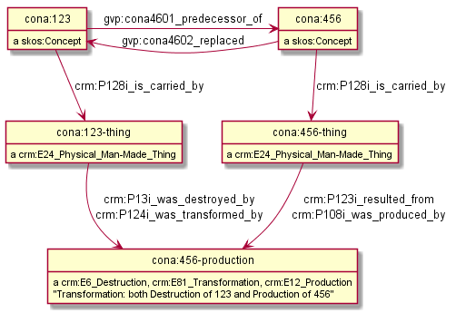
Reification
In RDF, Reification is an approach where a statement s p o is represented as a class instance with 3 "addressing" properties and then additional properties are added to elaborate the statement (eg probability, effective date range, who assigned the statement, etc).
This approach has been used in RDF for many years using the RDF Reification vocabulary. It was developed for CIDOC CRM in the paper Types and Annotations for CIDOC CRM Properties and is used for British Museum data (bmo:EX_Association, bmo:PX_property), see Reified Association.
rdfpuml recognizes a number of reification "situations" and renders them as a UML Association, for example
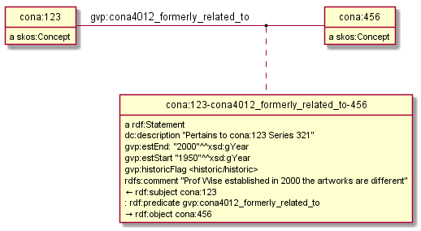
RDF Reification looks like this:
[] a rdf:Statement; rdf:subject s; rdf:predicate p; rdf:object o; <statement metadata>
rdf:Statement is the reification class, rdf:subject, rdf:predicate, rdf:object are the addressing properties, and it can be applied over any shortcut property p.
The Property Reification Vocabulary (PRV) can be used to describe other reification situations, using terms like in the table below. rdfpuml recognizes the following situations, and in the future you should be able to provide your own PRV descriptions.
REIFICATION CLASS SUBJECT PROP SHORTCUT PROP OBJECT PROP SHORTCUT
_____________________________ ______________________________ ________________________________ ___________________________ __________________________________________
rdf:Statement rdf:subject rdf:predicate rdf:object <any>
crm:E13_Attribute_Assignment crm:P140_assigned_attribute_to crmx:property crm:P141_assigned <any CRM prop>
crm:E14_Condition_Assessment crm:P34_concerned crmx:property crm:P35_has_identified crm:P44_has_condition
crm:E15_Identifier_Assignment crm:P140_assigned_attribute_to crmx:property crm:P37_assigned crm:P1_is_identified_by, crm:P102_has_title
crm:E15_Identifier_Assignment crm:P140_assigned_attribute_to crmx:property crm:P38_deassigned crm:P1_is_identified_by, crm:P102_has_title
crm:E16_Measurement crm:P39_measured crmx:property crm:P40_observed_dimension crm:P43_has_dimension
crm:E17_Type_Assignment crm:P41_classified crmx:property crm:P42_assigned crm:P2_has_type or subprop
frbroo:F52_Name_Use_Activity frbroo:R63_named crmx:property frbroo:R64_used_name crm:P1_is_identified_by, crm:P102_has_title
crmsci:S4_Observation crmsci:O8_observed crmsci:O9_observed_property_type crmsci:O16_observed_value
leak:Edge leak:hasSource <none> leak:hasTarget
For CIDOC CRM we need a new extension crmx:property to point to the property being reified (the shortcut), similar to how rdf:predicate is used. Even for a specific CRM reification class like E17_Type_Assignment, the shortcut property is not fixed to crm:P2_has_type: we may need to reify a sub-property thereof, e.g. crm:P72_has_language.
Visuals: the shortcut is shown as a normal relation. The reification node is attached to the relation usign a dashed line. It is automatically positioned below or to the right of the relation, depending on the relation's direction. The 3 "addressing" properties are shown inside the reification class, and there are little characters in front of them to point to the subject ("←" or "↑"), property (".." or ":") and object ("→" or "↓").
Limitation: you can show as reified a maximum of 2 relations between the same nodes, and even that is ugly.
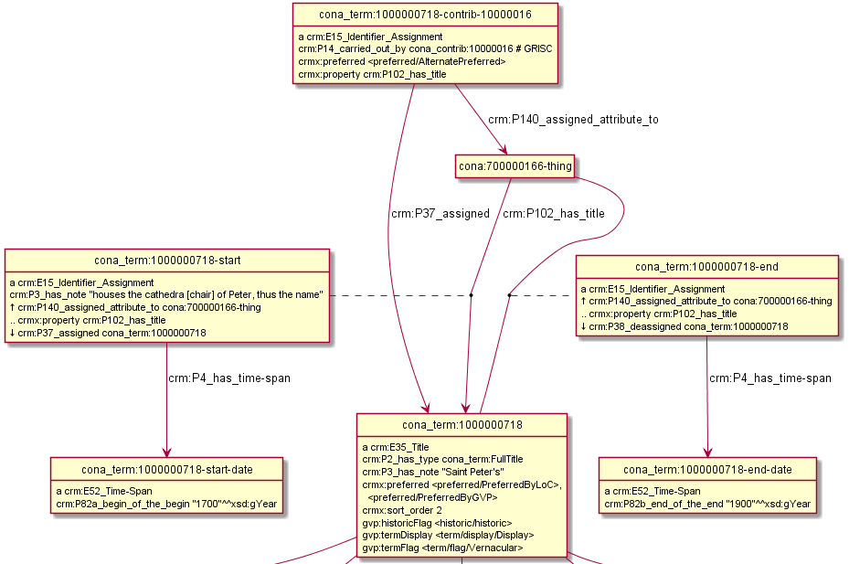
If you don't want to show a relation as reified (either because it's the third one between the same nodes or for other reasons, use the puml:NoReify class to tell rdfpuml not to reify it, e.g.
cona_term:1000000718-contrib-10000016 a puml:NoReify.
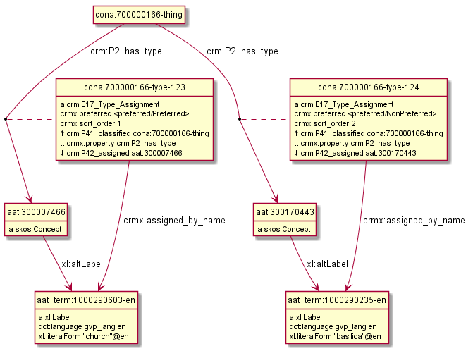
Inlines
In order to save space, rdfpuml inlines various resources in the subject node, rather than as a separate node. All literals and types are inlined automatically. In addition, you can inline other nodes by using the following.
puml:Inline-
Shows a single node inline. This is used quite often for lookup values, e.g.
<cona/event/competition> a puml:Inline.
cona_contrib:10000000 a puml:Inline; rdfs:label "Getty Vocabulary Program".
puml:InlineProperty-
Declares a property to be inlined, i.e. all its objects are shown inlined, e.g.
fn:annotationSetFrame a puml:InlineProperty.
fn:annotationSetLU a puml:InlineProperty.
E.g. this is used in this complex diagram showing FrameNet nodes.
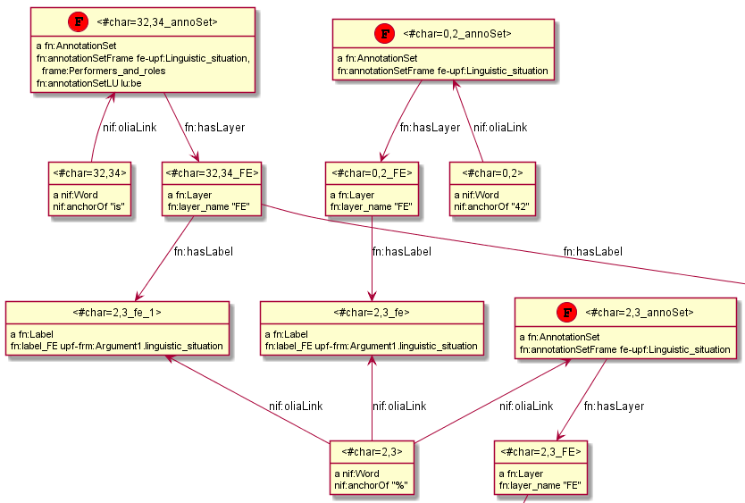
Labels
Nodes can have labels: puml:label, rdfs:label, skos:prefLabel.
If a node is inlined, its label is added as a comment. If several nodes are inlined at the same property, all their comments are also gathered together.
If a node is shown normally, its label is shown amongst the other node attributes.
puml:label is used to give a label without any predicate (attribute) name. It's printed in red (but only if single-line). It's used with completely different meanings in rdf2rml (to specify a SQL table or join) and in rdf2sparql (to specify a row filter): I know this is a hack.
Arrow Customization
rdfpuml allows you to customize arrows by using properties like puml:DIR-HEAD-LINE-COLOR-LEN. You can combine the different parts freely (each is optional) and even write them in different order.
- DIR
-
Arrow direction: left, right, up or down (default)
- HEAD
-
Arrowhead (end): none (use for symmetric properties), tri (hollow triangle), star (filled dot), o (empty dot).
WARNING: o has a bug: it sets the arrow direction to the opposite of what was specified.
TODO: allow customizing the arrowtail (beginning).
- LINE
-
Line style: dotted, dashed, bold, hidden.
dotted, dashed are exclusive of each other; bold can be used alone or with them. hidden can be used to adjust the layout by constraining node positions, and is exclusive of the other line attributes.
This example shows using the parameters DIR-HEAD-LINE-COLOR. We emit the same relations in the puml: namespace (to customize the arrow) and in the empty namespace (to show an arrow label).
<x> puml:none-right <y1>. <x> :none-right <y1>.
<x> puml:dashed <y2>. <x> :dashed <y2>.
<x> puml:dotted-bold <y3>. <x> :dotted-bold <y3>.
<x> puml:up-black <y4>. <x> :up-black <y4>.
<x> puml:tri-up <y5>. <x> :tri-up <y5>.
<x> puml:left-blue <y6>. <x> :left-blue <y6>.

- COLOR
-
Line color: name (e.g. red) or hex-code (e.g. FF0000) To see the full list of color names supported by PlantUML, use this command and search for ;color
java -jar plantuml.jar -language
For example, 4 of the arrows on this diagram are colored (1 green, 3 red):
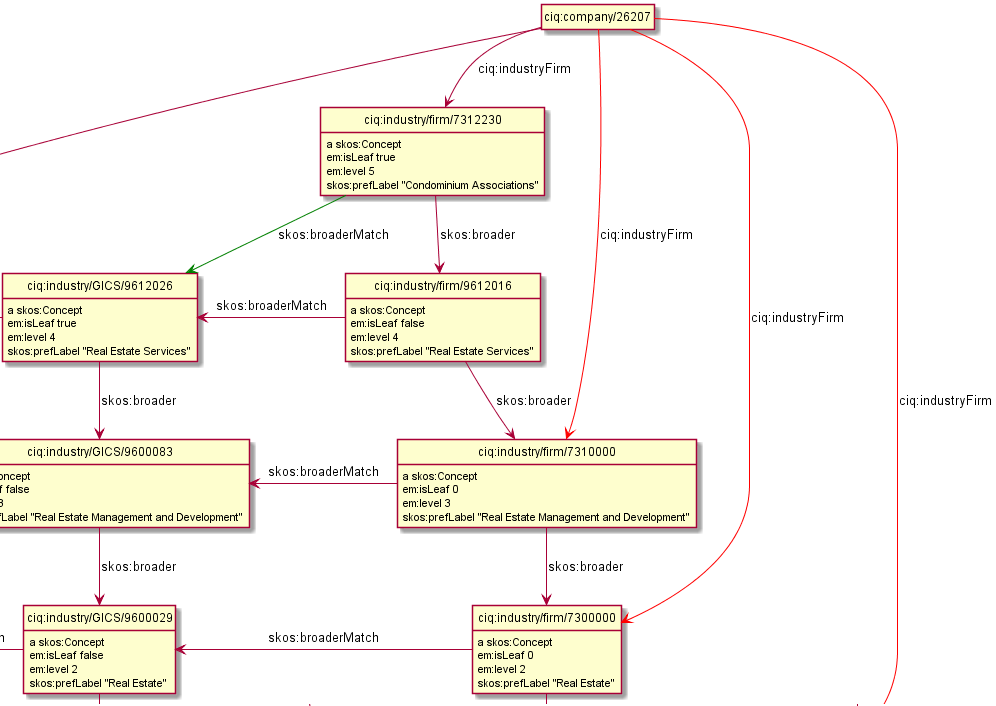
- LEN
-
Length: a number of 1 or 2 digits. This applies only to vertical arrows (up,down). You can use this to adjust the layout and in some cases avoid the need for parasitic hidden arrows.
See this example and its remake in rdfpuml below.
<x1> puml:down <y1>.
<x2> puml:up-2 <y2>.
<x3> puml:down-3 <y3>.
<x4> puml:up-4 <y4>.
<x5> puml:down-5 <y5>.
<x6> puml:up-6 <y6>.
<x7> puml:down-7 <y7>.
<x2> puml:right-9 <y3>.
<x4> puml:right-7 <y2>.
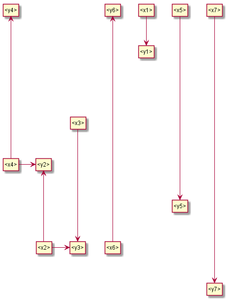
Arrow Per Edge
To customize the arrow of one relation connecting two nodes, use:
<node1> <prop> <node2>
<node1> puml:DIR-HEAD-LINE-COLOR <node2>
The arrow will show the label prop but the style specified with puml:DIR-HEAD-LINE-COLOR
Arrow Per Property
To customize the arrow for all relations with the same property, use:
<prop> puml:arrow puml:DIR-HEAD-LINE-COLOR.
E.g. on the diagram "Inlines", the following declaration was used to point all nif:oliaLink arrows upward:
nif:oliaLink puml:arrow puml:up.
Stereotypes and Colored Circles
Stereotype is UML lingo for "role". In PlantUML these include a «guillemetted italic label» and colored circle.
puml:stereotype "(LETTER,COLOR)LABEL"
where LETTER is a single uppercase letter, COLOR is a color name or hex-code (see </COLOR>), LABEL is a label, and all the parts are optional.
You can set stereotype on an individual node or a whole class, e.g. (referring to the previous diagram):
<#char=32,34_annoSet> puml:stereotype "(F)Frame"
fn:AnnotationSet puml:stereotype "(F)Frame"
Here is an example that also sets stereotype labels:
gvp:GuideTerm puml:stereotype "(G,green) Concept".
gvp:Concept puml:stereotype "(C,lightblue) ThesaurusArray, OrderedCollection".
iso:ThesaurusArray puml:stereotype "(A,red) ThesaurusArray, OrderedCollection".
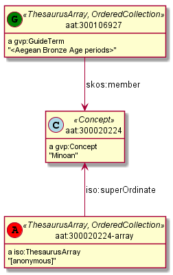
Here is a bigger example that also shows how arrow directions are handled. It's a diagram for the Duraspace Portland Common Data Model for digital library metadata (Fedora, Islandora, etc): a remake of one of the Reference Diagrams. (A proposal to make PCDM diagrams with rdfpuml is tracked as duraspace/pcdm#46)

Blank Nodes
Although the use of blank nodes is not recommended in semantic modeling, they are supported by rdfpuml. No special triples are needed for this.
E.g. below is a diagram of EXAMPLE 41: Complete Example from the Web Annotation Data Model.
As you can see, 10 nodes on the right side are blank nodes (have no URL). The tiny one in the middle has no attributes whatsoever, only the rdf:first, rdf:next outgoing links. It should have had a type rdf:List, this is an omission in the example.
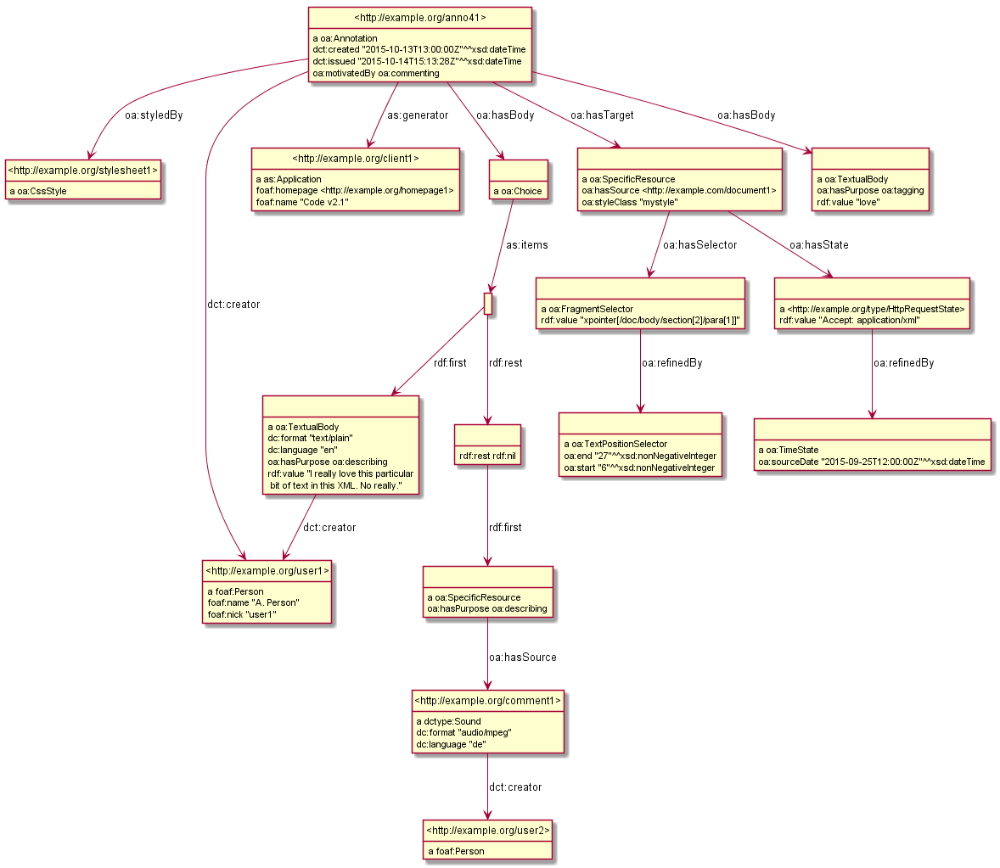
PlantUML Options
You can pass options and pragmas to PlantUML using the puml:options property (attached to an empty node). The default options are as per plantuml.cfg:
[] puml:options """
hide empty members
hide circle
skinparam classAttributeIconSize 0
""";
You can use left to right direction to fit diagrams with large nodes (see two examples below). Don't forget to add the hide options, else you'll get unwanted compartments and circles in nodes:
[] puml:options """
hide empty members
hide circle
left to right direction
""";
You can also try your luck with smetana, which uses an internal Java implementation of GraphViz instead of an external C program. One way to invoke smetana is by adding a pragma to puml:options. See text/saref4city for another way, and a trial.
!pragma layout smetana
First example (test/saref4city):
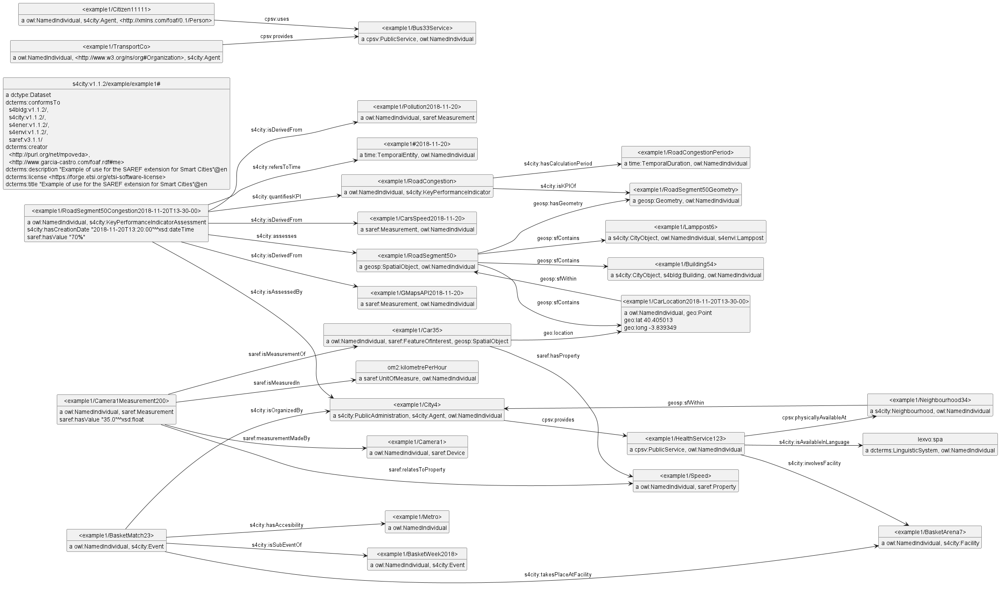
Second example (test/permid):
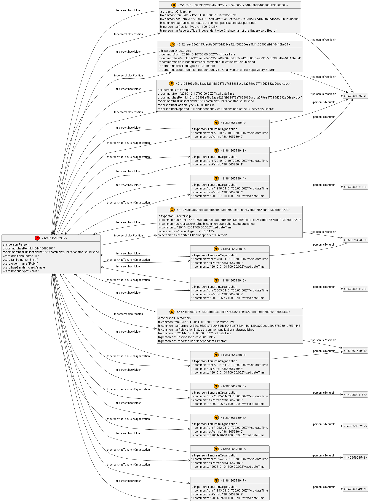
Unicode
The input Turtle can include Unicode chars (accented chars, Cyrillic, etc). Please invoke the script with option -C for proper processing of Unicode, eg:
perl -C -S rdfpuml.pl file.ttl
(The option -S causes Perl to search for the script in PATH.)
That's how the included bin/rdfpuml.bat invokes the script.
Prerequisites
GraphViz
PlantUML, see in particular plantuml class diagrams.
Perl. Tested with version 5.22 on Windows (cygwin and Strawberry).
Perl modules: RDF::Trine, RDF::Query, Encode, FindBin, Carp::Always, Slurp.
RDF::Prefixes::Curie. This is my own module located in ../lib, and rdfpuml needs FindBin to locate it.
Installation
Until rdfpuml is published as a proper perl package, use the following procedure:
Install the prerequisites.
Add rdfpuml/bin to your path.
Use rdfpuml/bin/rdfpuml.bat to run it:
perl -S rdfpuml.pl %1
See test/*/Makefile for examples how to set up make.
SEE ALSO
rdf2rml: a tool to generate R2RML transformations from RDF examples.
If you use rdfpuml or rdf2rml, please cite them as follows. See this presentation for numerous examples.
RDF by Example: rdfpuml for True RDF Diagrams, rdf2rml for R2RML Generation. Alexiev, V. In Semantic Web in Libraries 2016 (SWIB 16), Bonn, Germany, November 2016. Presentation, HTML, PDF, Video
See https://twitter.com/hashtag/rdfpuml for news, screenshots and announcements.
AUTHOR
Vladimir Alexiev, Ontotext Corp
Last update: 2023-04-29